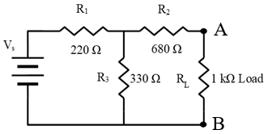

These are theoretical calculations. Enter actual measurements in the bench guide; its readings save to your signed-in account and can also be exported or backed up.
ECET 250E Lab 5
Thevenin’s Theorem and Maximum Power Transfer
Procedure 1 Original circuit
Use R1 = 220 Ω, R2 = 680 Ω, R3 = 330 Ω and RL = 1000 Ω. Calculated values use nominal resistances. Leave measured entries for the lab.

Table A
| Source voltage used ► | 12 V | 15 V | |
|---|---|---|---|
| IL (mA) | Calculated | 3.974 | 4.967 |
| Measured | |||
| VL (V) | Calculated | 3.974 | 4.967 |
| Measured | |||
| PL (mW) | Calculated | 15.789 | 24.670 |
| Measured (calculate with the measured values of V,I) | |||
Calculation steps without Thevenin’s theorem
1. Combine R2 and RL in series.
Rbranch = R2 + RL = 680 + 1000 = 1680 Ω
2. Combine that branch in parallel with R3.
Rp = (R3 × Rbranch) / (R3 + Rbranch)
Rp = (330 × 1680) / (330 + 1680) = 275.821 Ω
3. Find the voltage across the parallel branches, called Vp.
RT = R1 + Rp = 220 + 275.821 = 495.821 Ω
Vp = Vs × Rp / RT
At 12 V: Vp = 12 × 275.821 / 495.821 = 6.676 V
At 15 V: Vp = 15 × 275.821 / 495.821 = 8.344 V
4. Find load current, load voltage and load power.
IL = Vp / Rbranch; VL = IL × RL; PL = VL × IL
At 12 V: IL = 6.676 / 1680 = 0.003974 A = 3.974 mA
VL = 0.003974 × 1000 = 3.974 V; PL = 15.789 mW
At 15 V: IL = 4.967 mA; VL = 4.967 V; PL = 24.670 mW
Keep extra digits in the calculator until the final answer. A × V gives W; mA × V gives mW. All table results use unrounded intermediate values.
Procedure 2 Thevenin equivalent
Remove RL when finding Vth and Rth. The output terminals are A and B; voltage is positive at A relative to B.
Find the equivalent source and resistance
1. Find open-circuit voltage Vth. With RL removed, R2 carries no current, so its voltage drop is zero. R1 and R3 form a voltage divider.
Vth = Vs × R3 / (R1 + R3)
At 12 V: Vth = 12 × 330 / (220 + 330) = 7.200 V
At 15 V: Vth = 15 × 330 / (220 + 330) = 9.000 V
2. Disable the source to find Rth. R1 and R3 are now parallel; R2 is in series with their equivalent resistance.
R1 ∥ R3 = (220 × 330) / (220 + 330) = 132 Ω
Rth = R2 + (R1 ∥ R3) = 680 + 132 = 812 Ω
3. Reconnect RL = 1000 Ω to the equivalent circuit.
IL = Vth / (Rth + RL); VL = IL × RL; PL = VL × IL
At 12 V original supply: IL = 7.2 / 1812 = 3.974 mA
At 15 V original supply: IL = 9.0 / 1812 = 4.967 mA
Build the equivalent using a 7.2 V or 9.0 V supply in series with 812 Ω (or the closest available resistance). Do not apply 12 V or 15 V to this equivalent circuit.
Table B
| Source voltage used ► | 12v (For original circuit) | 15 v (For original circuit) | |
|---|---|---|---|
| Vth (V) | Calculated | 7.200 | 9.000 |
| Measured | |||
| R th (Ω) | Calculated | 812 | 812 |
| Measured | |||
| IL (mA) | Calculated | 3.974 | 4.967 |
| Measured(From Fig. 2) | |||
| VL (V) | Calculated | 3.974 | 4.967 |
| Measured(From Fig. 2) | |||
| PL (mW) | Calculated | 15.789 | 24.670 |
| Measured (calculate with the measured values of V,I) | |||
Tables A and B give identical theoretical load voltage, current and power. Use the actual measured values to verify agreement in the lab.
For an Rth measurement: remove RL, switch off and disconnect the supply, then short the two circuit nodes formerly connected to the supply. Never short the supply itself. Measure resistance across A and B with the network unpowered.
Procedure 3 Maximum power transfer
1. Match the load to the equivalent resistance: RL = Rth = 812 Ω.
2. At this load, VL = Vth / 2 and PLmax = Vth² / (4 × Rth).
12 V case: PLmax = 7.2² / (4 × 812) = 0.015961 W = 15.961 mW
15 V case: PLmax = 9.0² / (4 × 812) = 0.024938 W = 24.938 mW
Table C
| Source voltage used ► | 12 v (For original circuit) | 15 v (For original circuit) | |
|---|---|---|---|
| PLMAX (mW) | Calculated | 15.961 | 24.938 |
| Measured (calculate with the measured values of V) | |||
Table D Vs = 12 V in the original circuit
| RL ohms | VL volts | PL = VL2 / RL mW | VL volts | PL mW |
|---|---|---|---|---|
| Calculated | Calculated | Measured | Measured (calculate with the measured values of V) | |
| 100 | 0.789 | 6.233 | ||
| 470 | 2.640 | 14.825 | ||
| 812 | 3.600 | 15.961 | ||
| 1200 | 4.294 | 15.367 | ||
| 1800 | 4.962 | 13.677 | ||
| 2700 | 5.535 | 11.348 | ||
| 3300 | 5.778 | 10.117 |
Table E Vs = 15 V in the original circuit
| RL ohms | VL volts | PL = VL2 / RL mW | VL volts | PL mW |
|---|---|---|---|---|
| Calculated | Calculated | Measured | Measured (calculate with the measured values of V) | |
| 100 | 0.987 | 9.739 | ||
| 470 | 3.300 | 23.164 | ||
| 812 | 4.500 | 24.938 | ||
| 1200 | 5.368 | 24.011 | ||
| 1800 | 6.202 | 21.370 | ||
| 2700 | 6.919 | 17.731 | ||
| 3300 | 7.223 | 15.809 |
For measurements, the handout permits 820 Ω in place of the 812 Ω load. Keep calculated entries based on 812 Ω; record the actual resistance used when calculating measured power. For the equivalent circuit, set the supply to 7.2 V for Table D and 9.0 V for Table E.
Worked example for Tables D and E
Example: Table D, RL = 470 Ω, Vth = 7.2 V and Rth = 812 Ω.
1. Find total series resistance.
Rtotal = Rth + RL = 812 + 470 = 1282 Ω
2. Find the load voltage using voltage division.
VL = Vth × RL / (Rth + RL)
VL = 7.2 × 470 / 1282 = 2.639626 V ≈ 2.640 V
3. Find load power and convert watts to milliwatts.
PL = VL² / RL = 2.639626² / 470 = 0.0148247 W
PL = 0.0148247 × 1000 = 14.825 mW
For Table E, use the same steps with Vth = 9.0 V. Repeat for each load resistance listed in the tables.
Using measured values
Tables A and B: use both measured voltage and measured current.
PL (mW) = VL (V) × IL (mA)
Tables C, D and E: use measured voltage and actual load resistance.
PL (mW) = 1000 × [VL (V)]² / RL (Ω)
Record the largest measured sweep power in Table C, with its actual RL. This is the largest sampled value; the theoretical peak occurs at RL = Rth.
Percent error = 100 × |measured − calculated| / |calculated|
Original versus equivalent: compare measured VL and IL at the same original source setting. Record both readings and their difference.
Measured comparisons
Original and equivalent load readings at 12 V: _____________________________
Original and equivalent load readings at 15 V: _____________________________
Measured Vth versus calculated Vth: ____________________________________
Measured Rth versus calculated Rth: ____________________________________
Graphs and conclusion
In Excel, plot measured PL (mW) versus actual RL (Ω) for each source case. Make Graph A for 12 V and Graph B for 15 V. Label the highest measured point on each graph. Attach the graphs and circuit photos showing all connections.
Were the objectives met? Support the answer with measured data.
_________________________________________________________________
What else did I learn? __________________________________________________
Problems encountered and solutions: ____________________________________